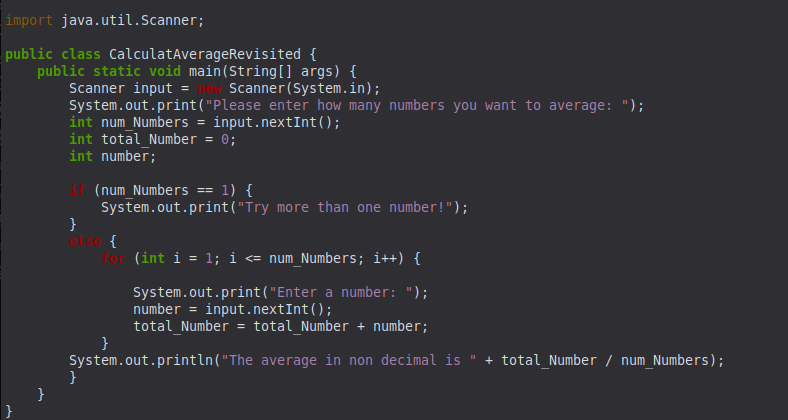

Here is a snippet of code for a class project where we were required to code an inventory keeping sytem in Java.
Here is a snippet of code for a class project where we were required to code an inventory keeping sytem in Java.

This a small program that was made to calculate the area of particular shapes

And this is a small program made to average up an amount of numbers designated and proided.
All these projects can be further automated or expanded upon in the future, as well as giving me insite into how technology is used today.